金剛山/岩手県
岩手県の山中に凄い寺があったというタレコミを聞いたのはずいぶん前のことだ。
東北に出かけた際にその事を思い出し、行ってみることにした。
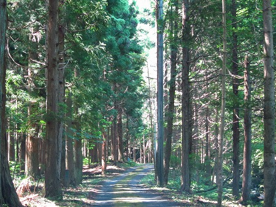
場所は岩手県の内陸部。
いつものことだが、詳細な場所は示しませぬので、行きたい方は自分で調べてね。
人里離れた山中の一本道を車で走っていく。
本当にこの先にお寺なんてあるのかなー？
どう考えても何もなさそうな人外魔境の地にしか思えないんですけど。
と、心細くなって来たところで突然視界が開け、目の前に信じられない光景が広がっていた！
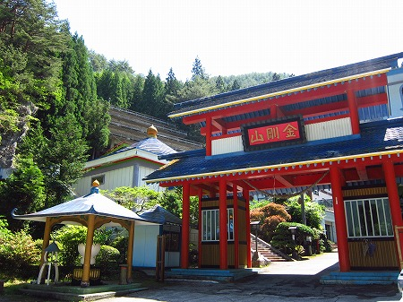
うおお、何か異様に派手なお寺じゃないか！
しかもあちこちにかなり香ばしい感じの建物がチラッチラッと見え隠れ。
門前で早くも「当たり」を確信しちゃいましたよ！
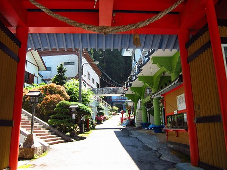
境内はこんな感じ。
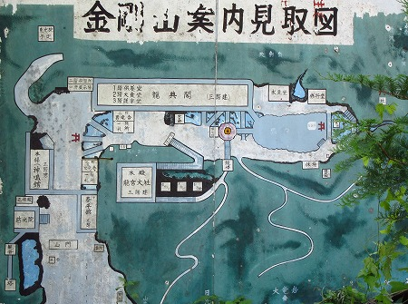
左下が山門
谷合に沿ってＬ字型に堂宇が並んでいる。
一番奥の右上の部分に滝がある。
ここは滝行を中心とした修行霊場のようなところなのだ。
山門の脇に大きな観音サマと塔があったので先に見ておこう。
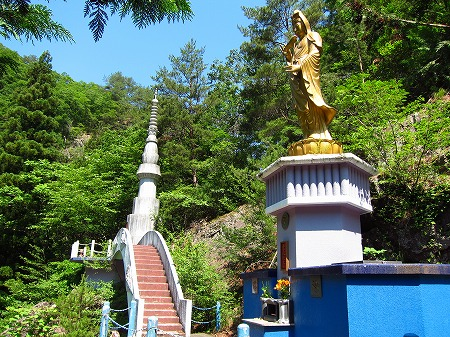
説明によると慈眼観音というお名前らしい。
そして塔は宝輪塔。何でも霊波（電磁波）が超強い場所なのだとか。
またまたまた〜、そんなこと言っちゃって〜。
電磁波強かったら電子機器とかぶっ壊れちゃうじゃないのー。例えば今使ってるデジカメとか。
デジカメ…とか、デジ…
あれ？あれれれ？あれれれれ？
…デジカメが動かないじゃないか…
さっきまで全く問題なく作動していたカメラが塔に来た瞬間からウンともスンとも言わなくなってしまったのだ。
結局この先カメラは起動することなく、以後緊急用のサブのコンデジで撮ってますので、この先はどうぞ低画質でお楽しみください、的な感じになってます。ハイ。
で、気を取り直して塔の前から見た光景。
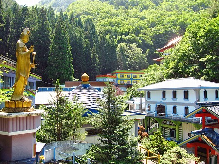
境内にはたくさんの建物が軒を連ねている。
そのほとんどがコンクリ造でビビッドな色でペイントされていてとてもにぎやかな印象だ。
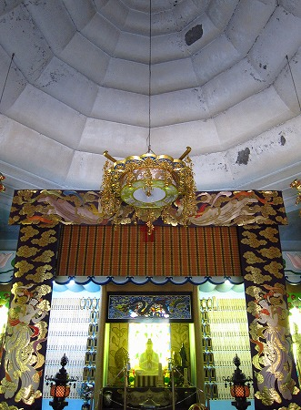
中でも印象的だったのが境内のあちこちに掲げられていた絵画。
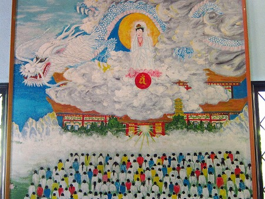
龍を従えた観音様を大勢の人々が崇め奉る、の図。
閻魔大王の裁きを受ける人々。
これも人々のマッチ棒のような後ろ姿が印象的だ。
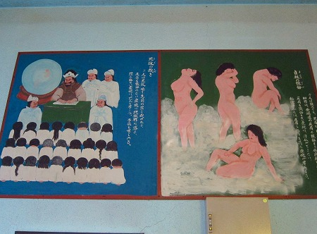
それ以上に凄いのがこちらの女性陣！
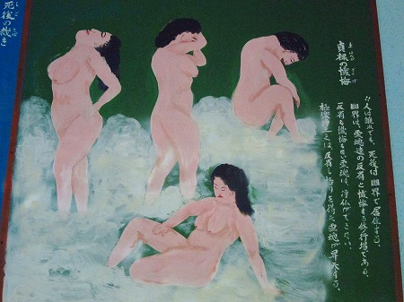
人は死後、裸で懺悔するのだ、的な内容なのだが、スチームサウナでリラックスしているようにしか見えないんですけど。
ああ、こういう歪んだ見方をすること自体が懺悔、なんですね。スミマセン、死んでから反省します！
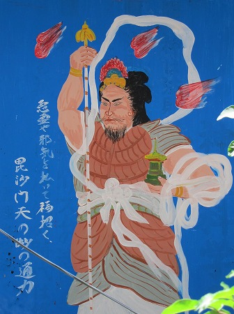
毘沙門天。もはや画力に関しては四の五の言うまい。
それでも描かずにはいられない前のめり気味なパッションがあったのだろう。
他にも素敵すぎる写真が多数飾られていた。
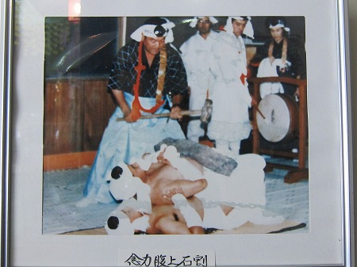
念力腹上石割！
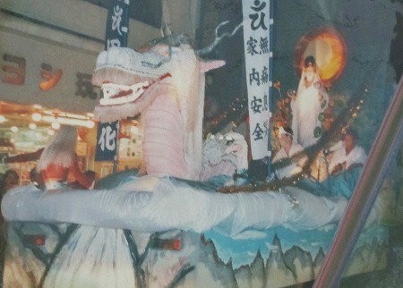
龍神×観音のエレクトリックパレード！
天湯殿
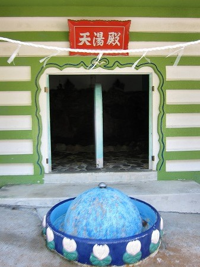
中は男女に別れていて、お風呂なのかな？
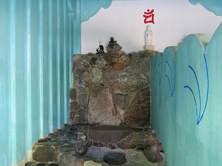
それにしてもこれだけ大規模な施設なのに人がいない。
入り口付近で声をかけてみたのだが、反応もない。
駐車場には数台車が停まっていたので誰かがいるはずなのだが、どこか山の中にでも修行に行っちゃったんだろうか？
ま、仕方なんでそのまま奥までずずーっと見学させてもらいますけど。
さらに奥に進むと極楽門という門が現れる。
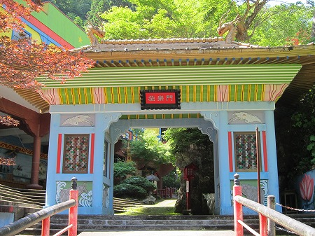
如何ですか？この門？
水色×黄緑、という日本では考えられないカラーリングの素敵すぎる山門。
その門を潜るとさらに素敵な世界が広がっている。
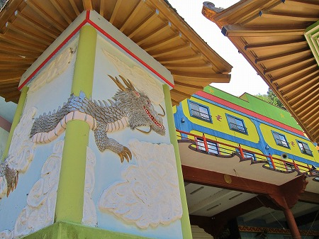
黄色い壁面に青いフレームという通常の発想からは出てこないステキなカラーリングの建物が現れる。
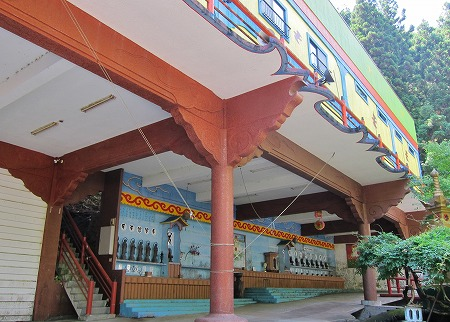
その１階はステージのようになっている。
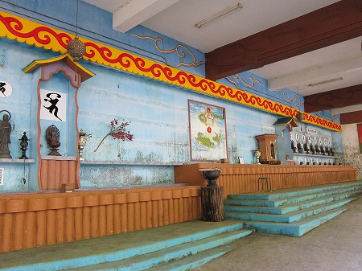
ステージには仏像が並んでいて、何らかの宗教的イベントが行われているのだろう。
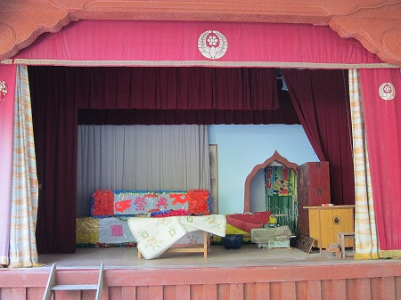
小学校の講堂のような感じ。
ここで学芸会チックな宗教行事が行われたりするのだろうか？
想像しただけでワクワクしちゃうじゃないか！
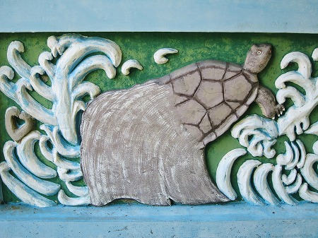
境内のあちこちには素通りを許さぬアイテムが目白押し。
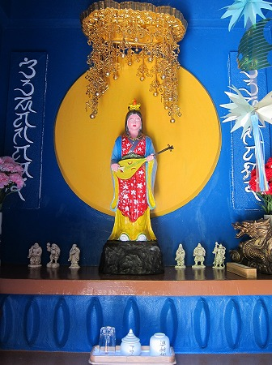
そうこうしているうちにこの霊場の肝の部分に辿りつく。
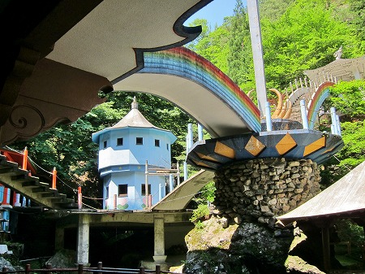
七色のアーチ橋の中心に巨大な剣が。
ある意味この霊場をもっともシンボライズしているオブジェといえよう。
この霊場に限らず滝行を中心とした修行場といえば真言密教系の神仏習合の霊場が多い。
真言密教といえば不動明王。不動明王といえば剣。
というわけで巨大な剣がそびえているのだ。
その巨大な剣は霊場の重要な場所全てとアーチ橋で繋がっている。
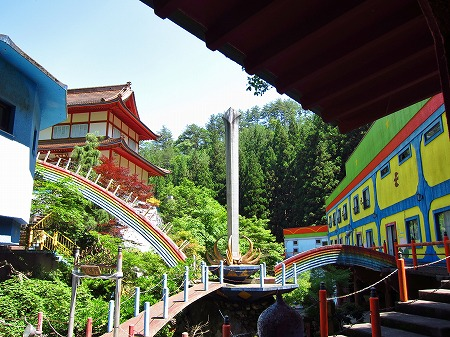
右手は先ほど紹介したこの霊場で一番大きな建物である龍興閣。
で、左手の赤い建物は本堂に相当する龍宮大社。
さらに手前の橋はメインの修行場である滝に向かっているのだ。
つまりこの霊場の主だった場所にはこの巨大な剣を経由して行き来することになっているのだ。
このような高低差のある場所で立体的な回廊を設けることで、この場所が非日常的な場所である事を殊更に演出しているのだろう。
上手く作ってあるなあ、としきりに感心しちゃいましたよ。
一番奥にはメインの滝。
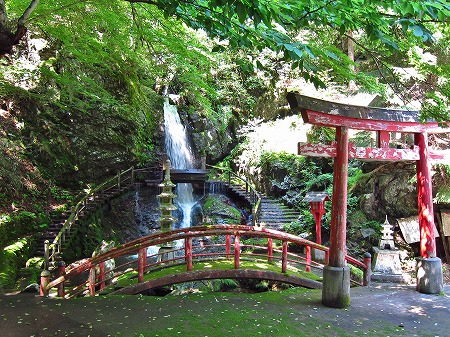
滝には左右から橋が架かっていて、これまたカッコイイ。
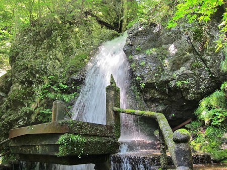
ここでバシャ—っと滝に打たれるのでしょう。
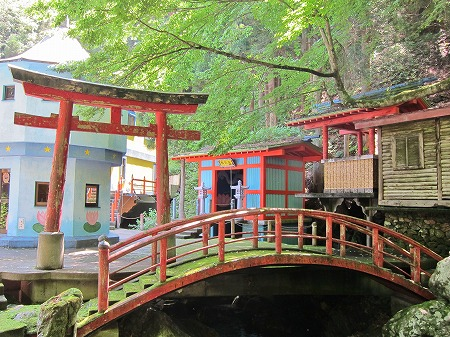
滝の手前にもいくつかのお堂や祠が。
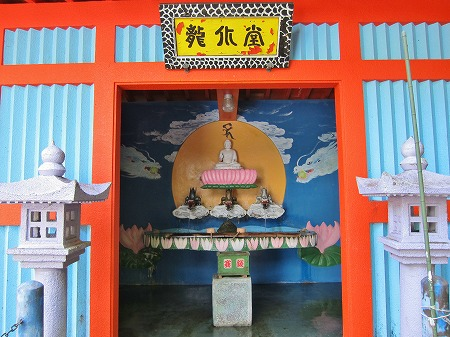
こちらは龍水堂。
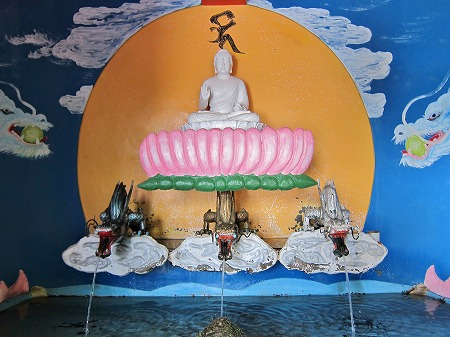
三匹の竜の口から水が出ています。
さらに六角形の建物、宝鐘塔。
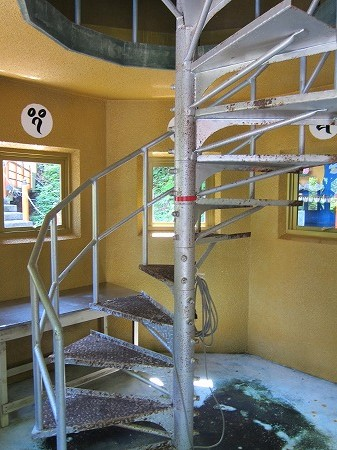
内部は螺旋階段になっていた。
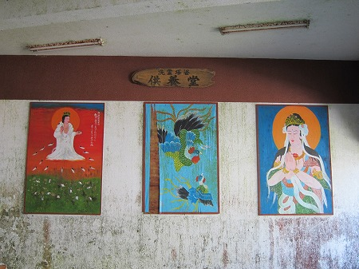
相変わらずのイラストのテイストは最高だ。
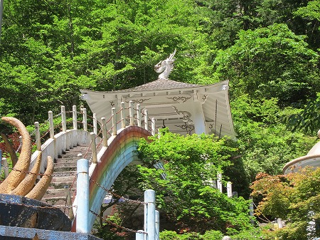
七色のアーチは奇天烈な堂宇が連続するこの霊場の中に於いても強烈な印象を放っている。
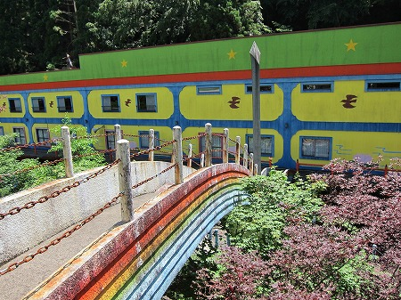
案外急な角度なので橋の強度含めて少しビビります。
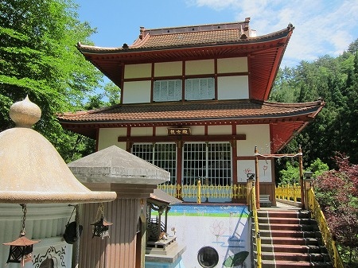
で、本堂に相当する龍興閣。
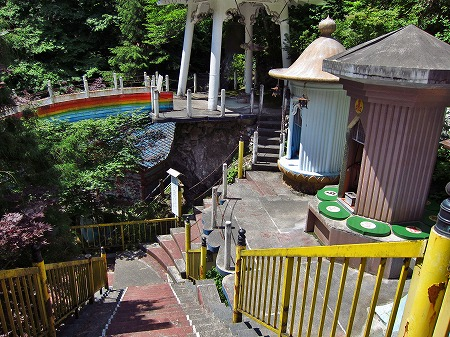
その他にも細かい信仰アイテムが所狭しと並んでいる。
さらに傾斜地なので細かい段差があり、境内の複雑さに一層拍車をかけている。
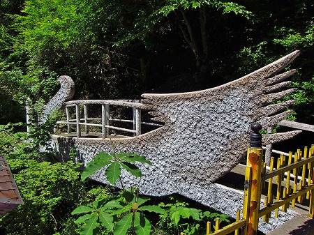
スワン（？）型の橋。これはすてき。
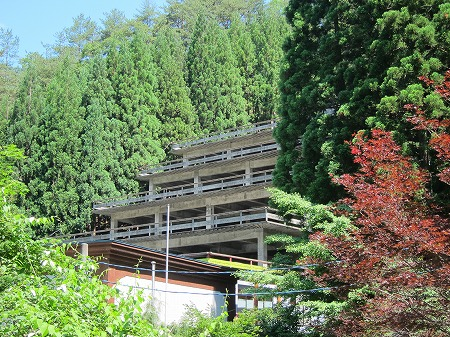
さらに奥には建設中の建物が。
森の中に埋まるようにセットバックしたカックイイ建物だったが…
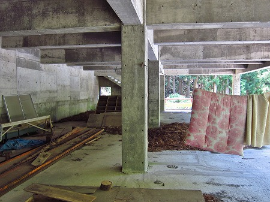
まだまだ完成には程遠いようで。
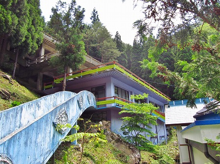
東北の山中にこんな極彩色のパラダイスがあったとは未だに信じられない。
ひょっとしたら夢を見ていたのかもしれない。と今でも思うほど浮世離れした霊場だった。
「日本のお寺では普通ｌこの色は使わないでしょ」、的な目に見えないお約束を軽くぶっちぎっている姿勢に感銘を覚えましたよ、私は
ちなみにこの霊場を離れたらデジカメは何の問題もなく起動しました。
やっぱり…電磁波だったのか…（半信半疑）…。
情報提供はarai araiさんです。ありがとうございました！
2014.06.
珍寺大道場 HOME